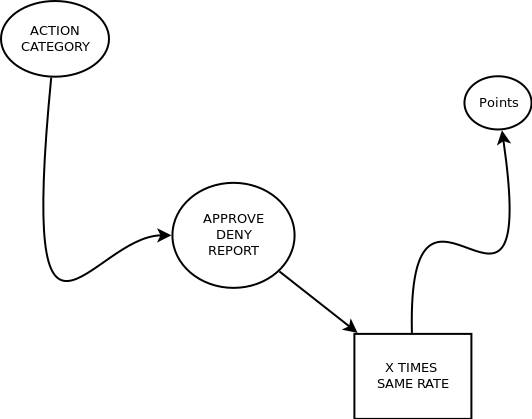

The BlockChain Eco System

1 Approved Action === 1 Point | 1 Point === +1 coin
1 Denied Action === 0 Points | 0 Points === +0 Coins
What is the Value of an Expression of Care?
Brands
- While a single user gain one single point for each approved action, companies or Brands gain one point for each employee point.
- Brands or Companies use OdicPoints to be Higher or Lower between all others Ranking Points.
User / Player
-
By the sense of justice, a citizen who help the community envioriment should be rewarded for that choice. Points become Coins for Users Only!
-
Each OdicPoint User have in Each Status Path, can be Converted into OdicCoins.
- This OdicCoins Should have Expression in Reality, so a User can use it in a Store.
- Optionaly this platform should offer a Store Place ( only to those ( individuals )) who are at least participating activly in the Challenge!
CryptoCoins Respective Challenge:
- CryptoCoins Communities Should care about the Energy that is spend by each single user of this Competition. If one Approved action represents Value, a CryptoCoin Should be given to each User Approved Action.
For those who don't have the will to clean or help Nature environment, because they have no motivation. Now you have many motivations!
Earn Points, earn Game status, earn Professional Status, earn Social Status, earn Life experience, earn Personal and Community Business Gratitude!
Note:
How much is the Value of a Choice that doesn't Have Value? Maybe there is no Value, therefor we can exchange what doesn't have any Numeric Value with something that does have. Let us create a simple possible example:
Lets say "you" did made some action that benefit others with sucess. You got one single "Coin / Point" that have only the Value of a choice. Those who have business, agree that a Choice who cares others have no Value if doesn't give them money. Then it would be possible to exchange one single "Coin / Point" with a reward that have the same Value ( The value of Choice ). By the way, all legal jobs of the world are in fact "jobs that have no value", as they should already exist in any case, to this single "dream" of mine, be possible.
All relations between Clients and Brands ( Brands employees can only gain points to particular proprieties of their own professionalism in cause at real-time ) > Negative "opinions" can be shared not pointed or evaluated as we normally care to share what is negative, not so far what is not, but positive. Is always good to learn from who did a bad choice. Not because "who is who" but because we all learn from knowledge or most of mistakes, that give and share knowledge aka (more information).
Back to Main Page